China
Chery
Founded in 1997, Chery has long been China's largest car exporter. It also sells its SUVs under the Omoda and Jaecoo names in Europe.
- Founded
- 1997
- Models
- 44
- Generations
- 51
- In production
- 23
- generations
- Photos
- 47
Range
Brands abroad
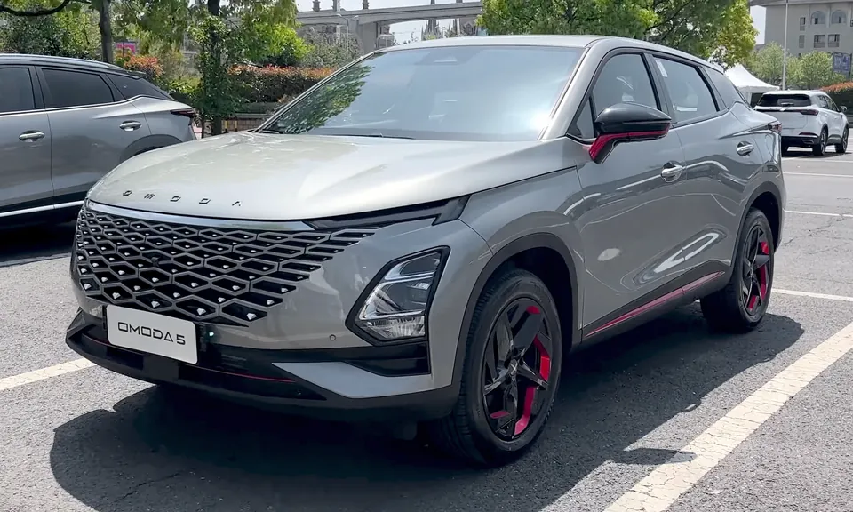
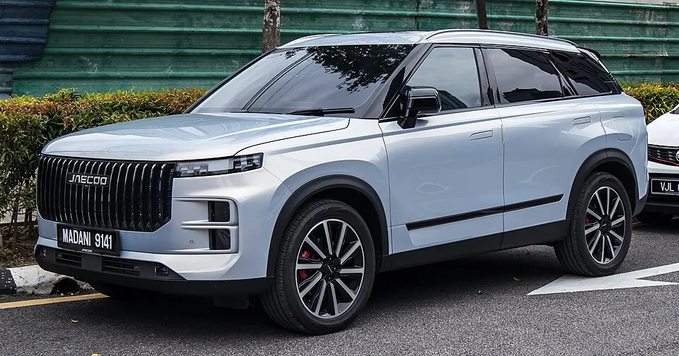
All models and generations
44 models, each with all its generations.
In production
- Chery Fulwin A9
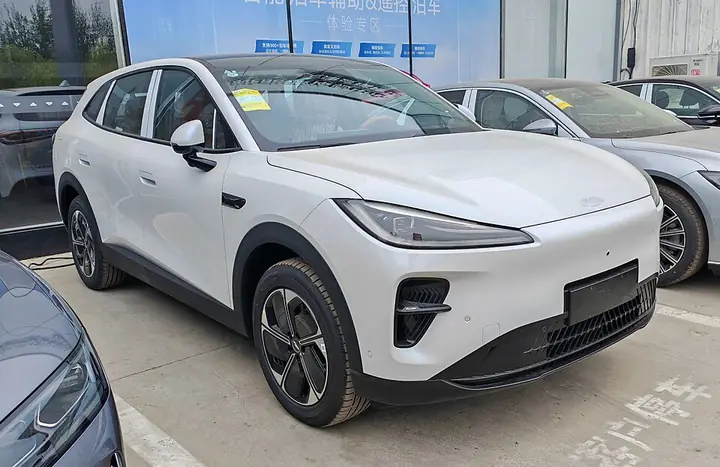
Chery Fulwin T9L- Chery Tiggo V
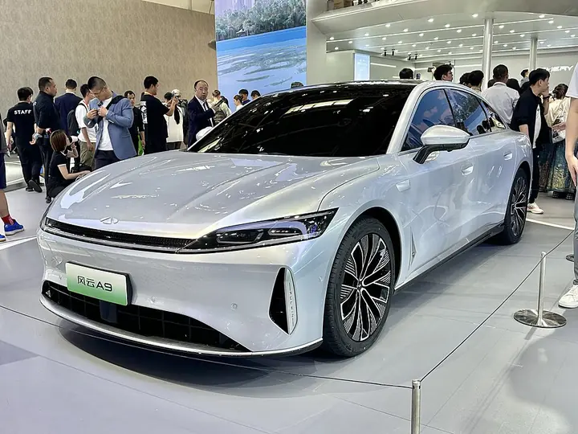
Chery Fulwin A9L- Chery Fulwin T11
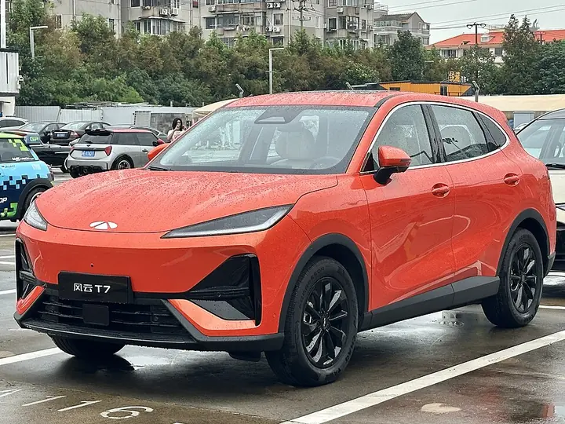
Chery Fulwin T7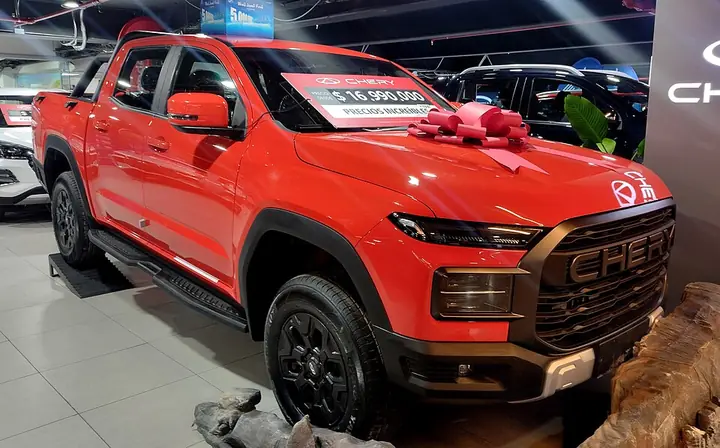
Chery Himla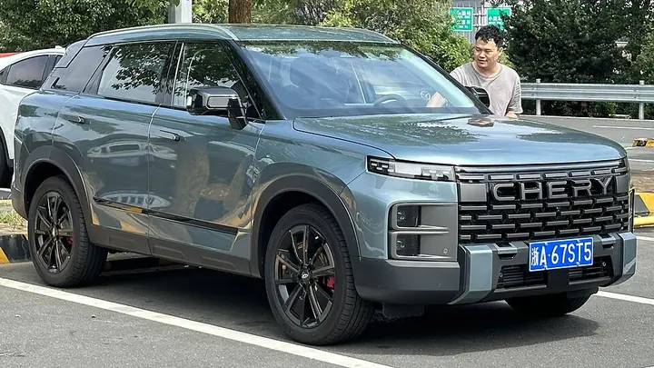
Chery Tansuo 06- Chery Tiggo 9
- Chery Tiggo 9X
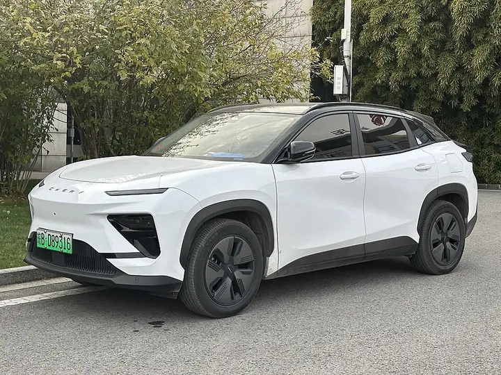
Chery eQ7- Chery Arrizo 8
- Chery Wujie Pro
- Chery QQ Ice Cream
- Chery Arrizo 5 Plus
- Chery Tiggo 5x
- Chery Tiggo 8
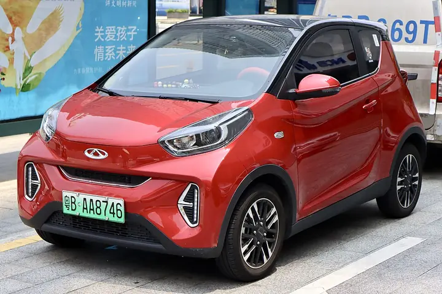
Chery eQ1- Chery Arrizo 5
- Chery Tiggo 3x
- Chery Tiggo 7
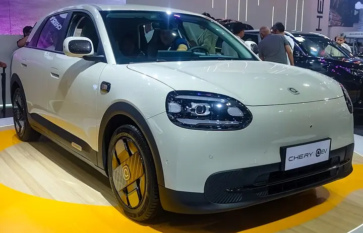
Chery QQ3
Past models
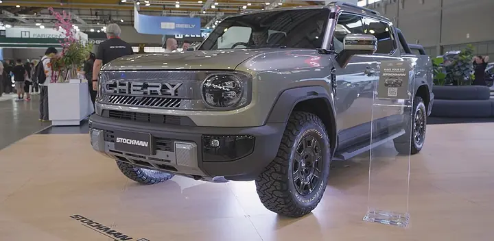
Chery Stockman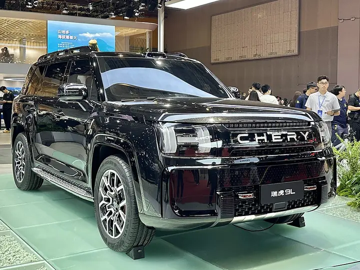
Chery Tiggo 9L- Chery Tiggo 3
- Chery eQ5
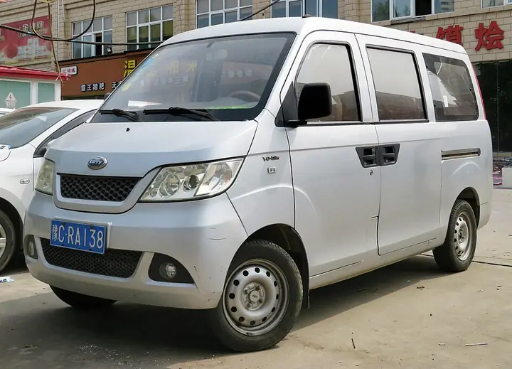
Chery Q22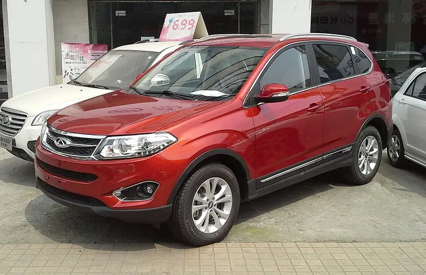
Chery Tiggo 5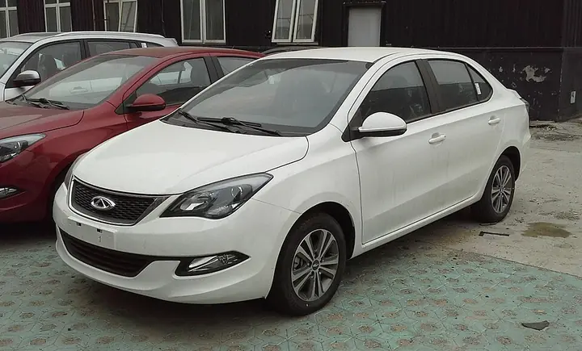
Chery Arrizo 3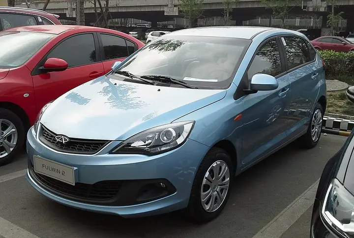
Chery Fulwin 2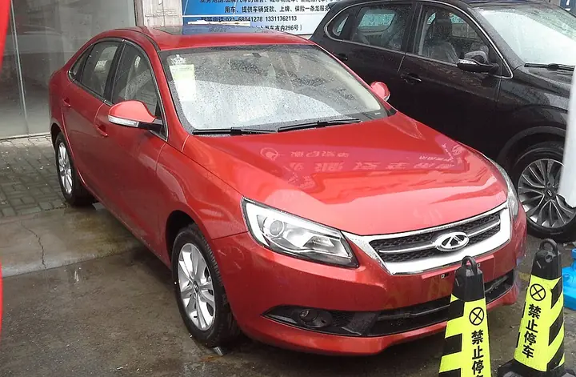
Chery Arrizo 7- Chery Arrizo M7
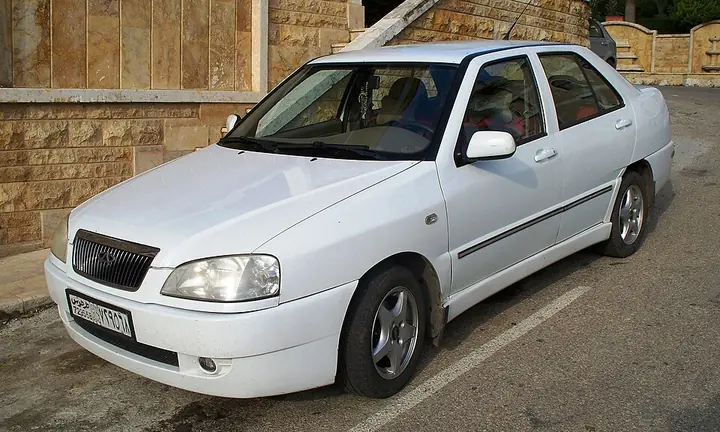
Chery Cowin- Chery E5
- Chery Eastar
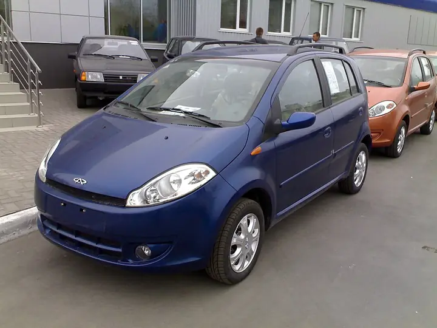
Chery A1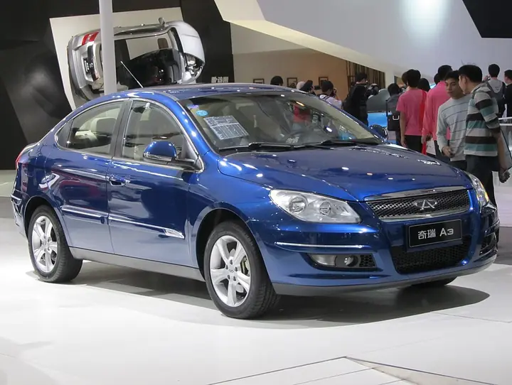
Chery A3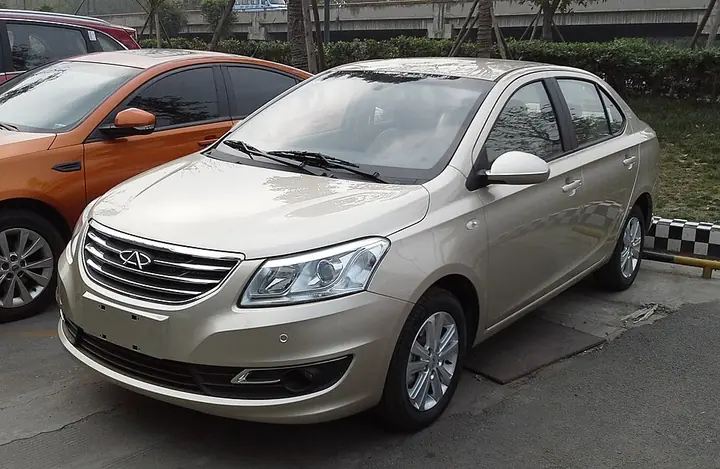
Chery E3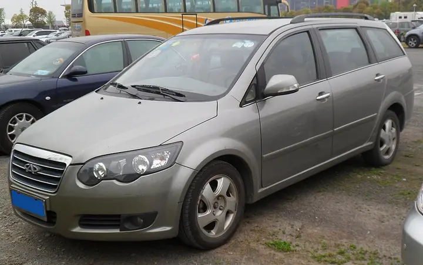
Chery Eastar Cross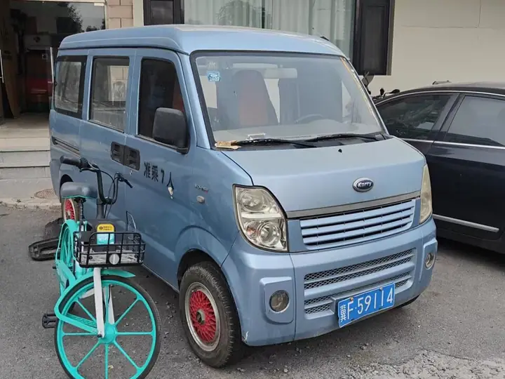
Chery Q21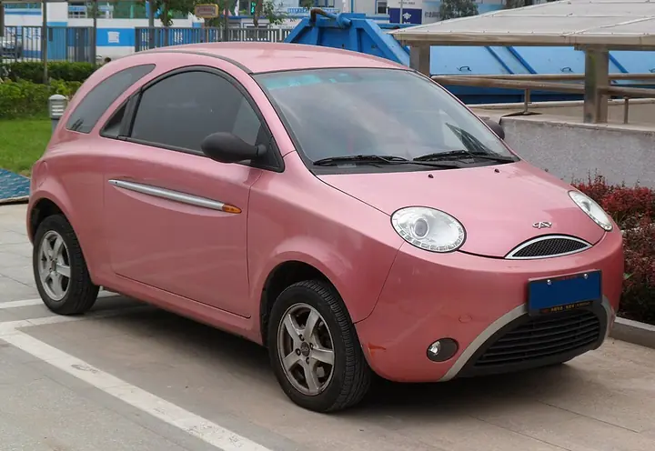
Chery QQme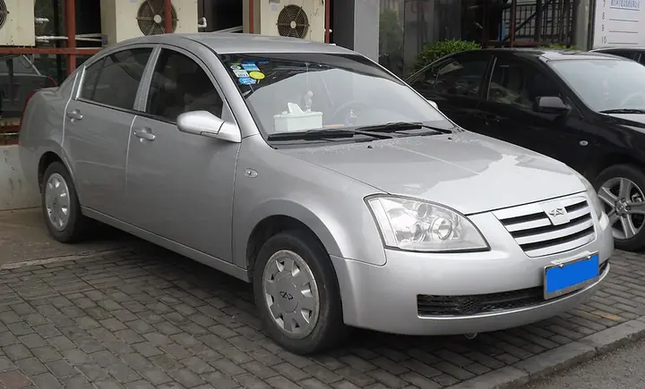
Chery A5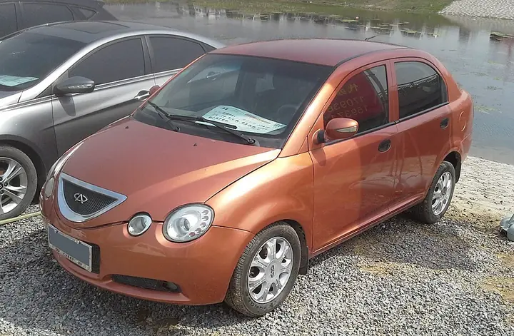
Chery QQ6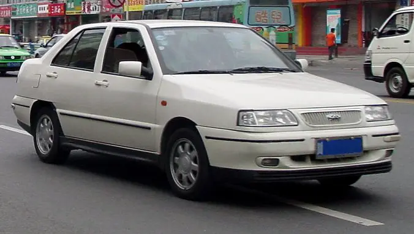
Chery Fulwin
Source: Wikipedia, CC BY-SA 4.0.


.jpg){kind=link}
.jpg){kind=link}
.jpg){kind=link}